Propiedad # 10533940
Alquiler
Alquiler
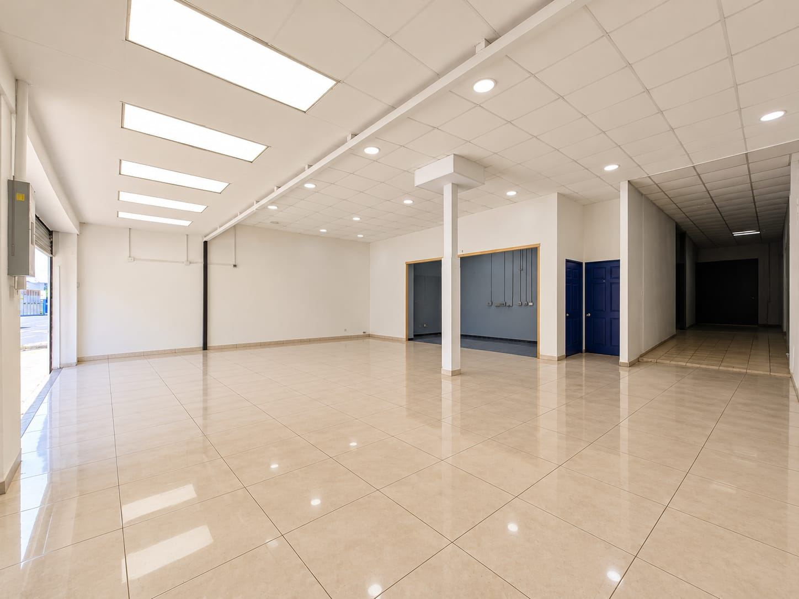
Cerca de Avenida 10, San José
Local comercial en alquiler cerca de Avenida 10, San José, con acceso a una zona comercial de la ciudad. Sus aproximadamente 200 m² ofrecen un salón amplio y luminoso con frente a la calle y dos cortinas metálicas, un área de trabajo con previstas de agua y electricidad, una pequeña bodega y una bodega amplia adicional. La instalación eléctrica se adapta a diferentes necesidades comerciales y cuenta con baño accesible conforme a la Ley 7600. Ideal para tienda, showroom, distribución, servicios u otro tipo de negocio.
Alquiler: ₡1.000.000 mensuales (aproximadamente $2.000)
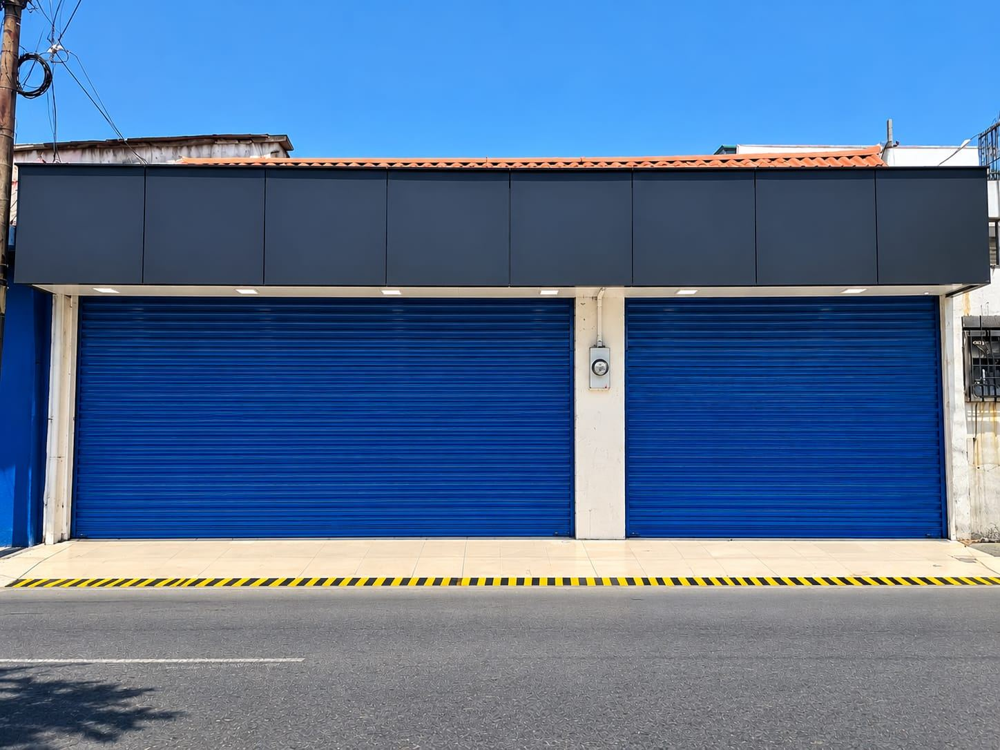
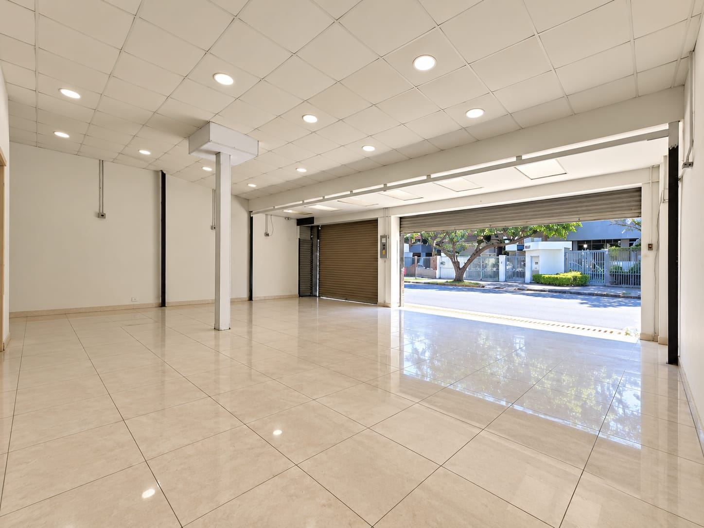
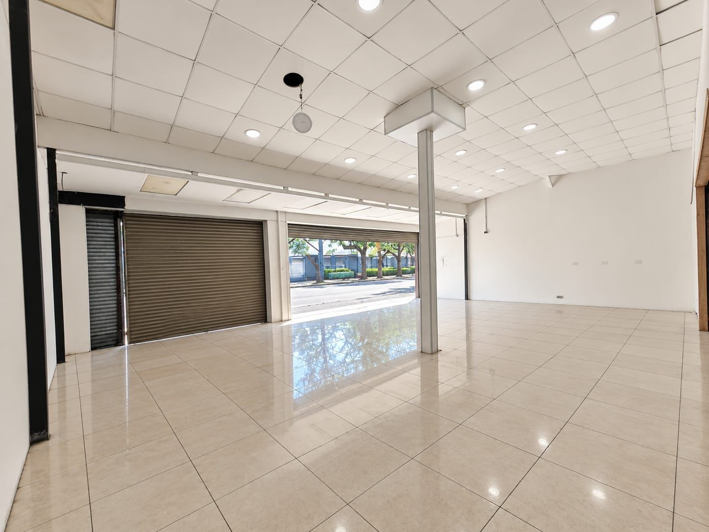
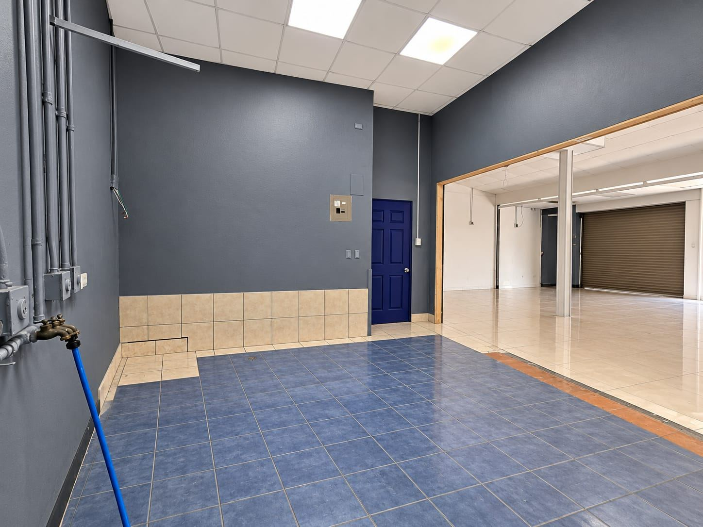
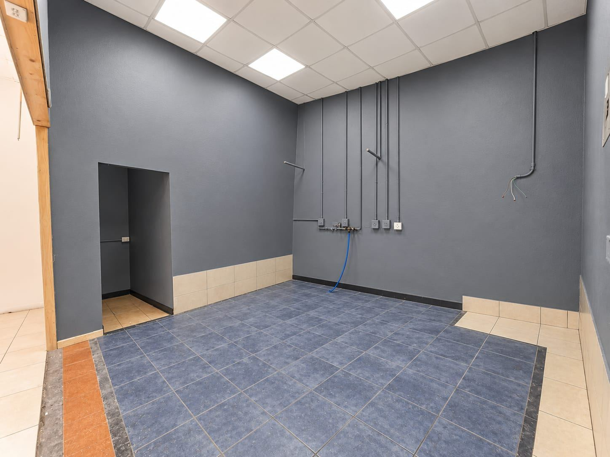
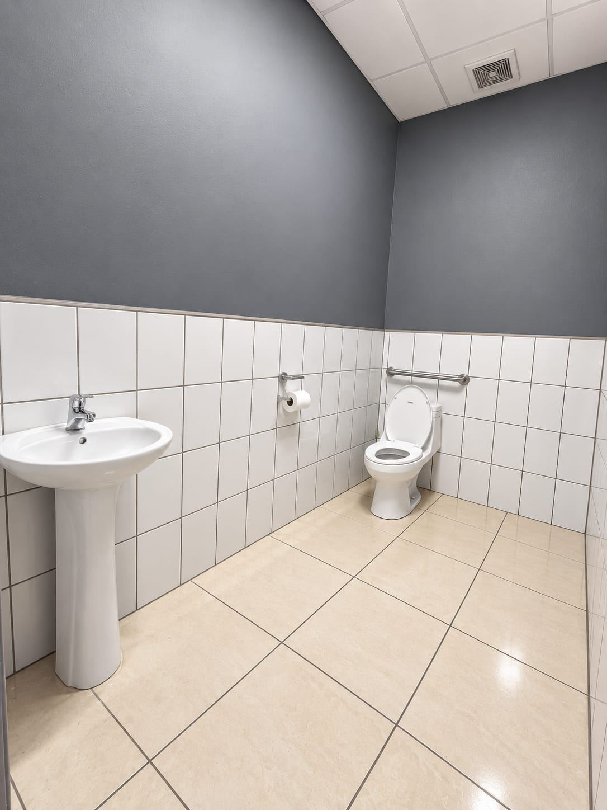
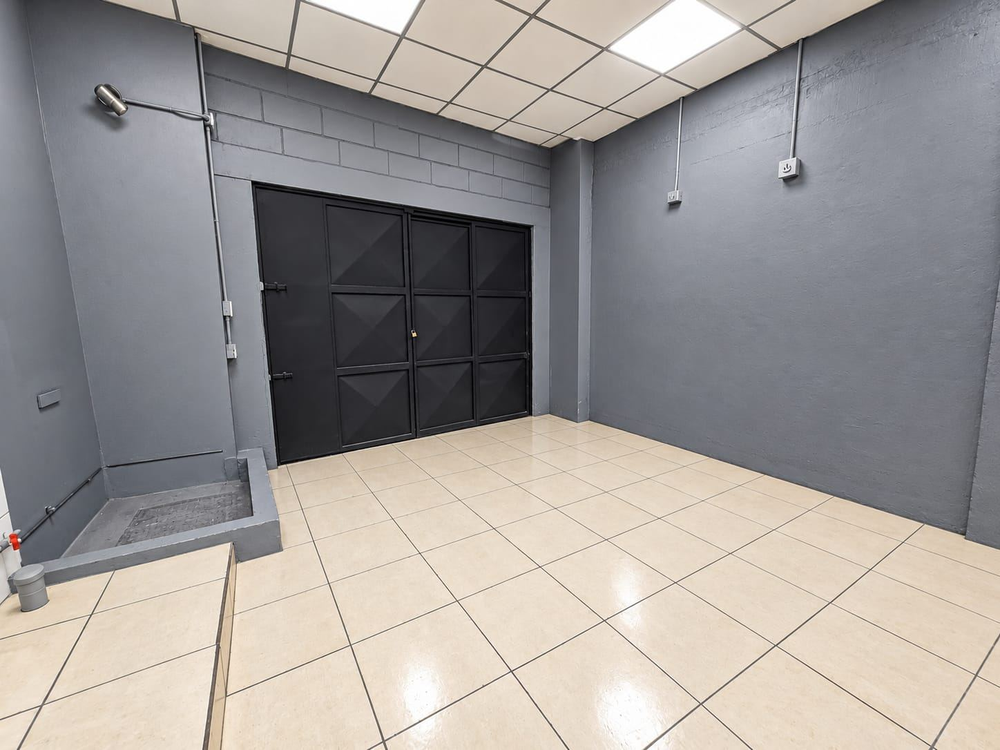
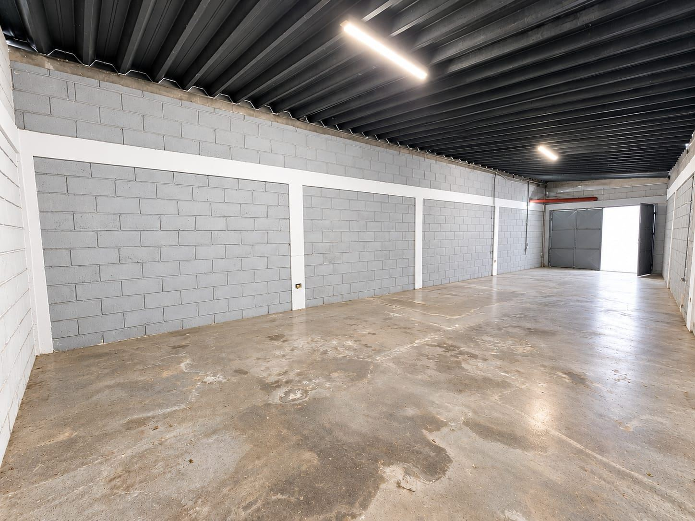
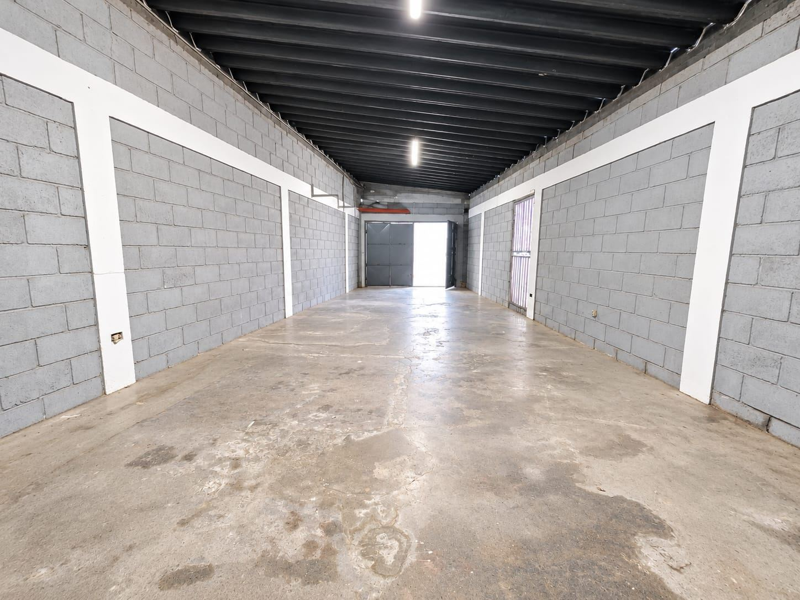
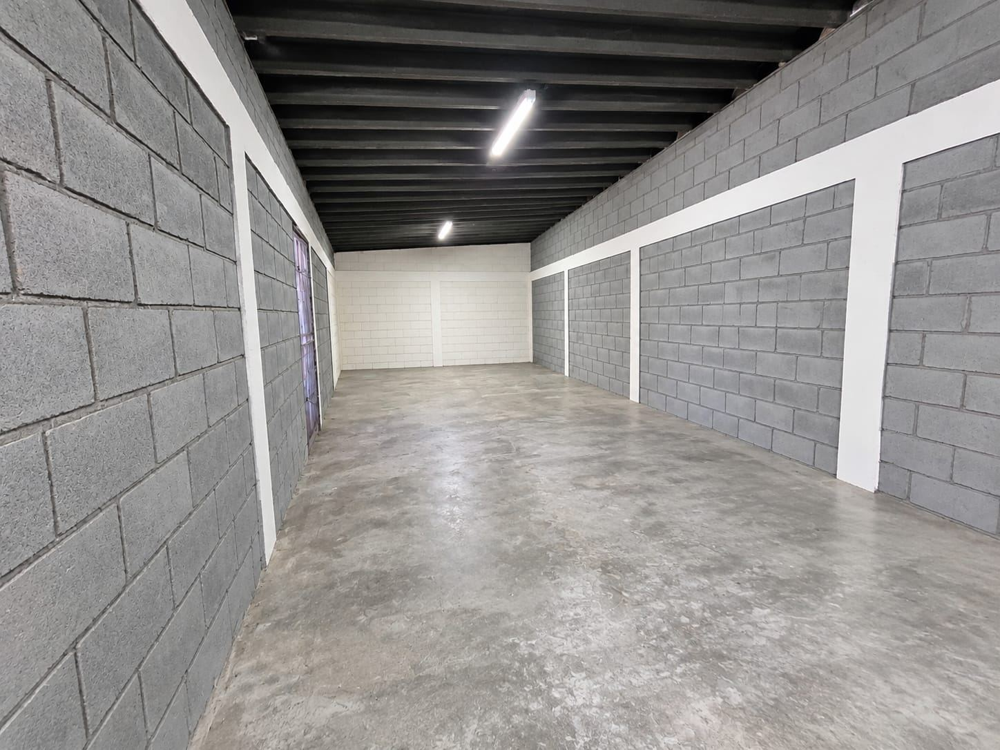
Carlos Alfaro Camacho · Teléfono y WhatsApp: +506 6019-0789